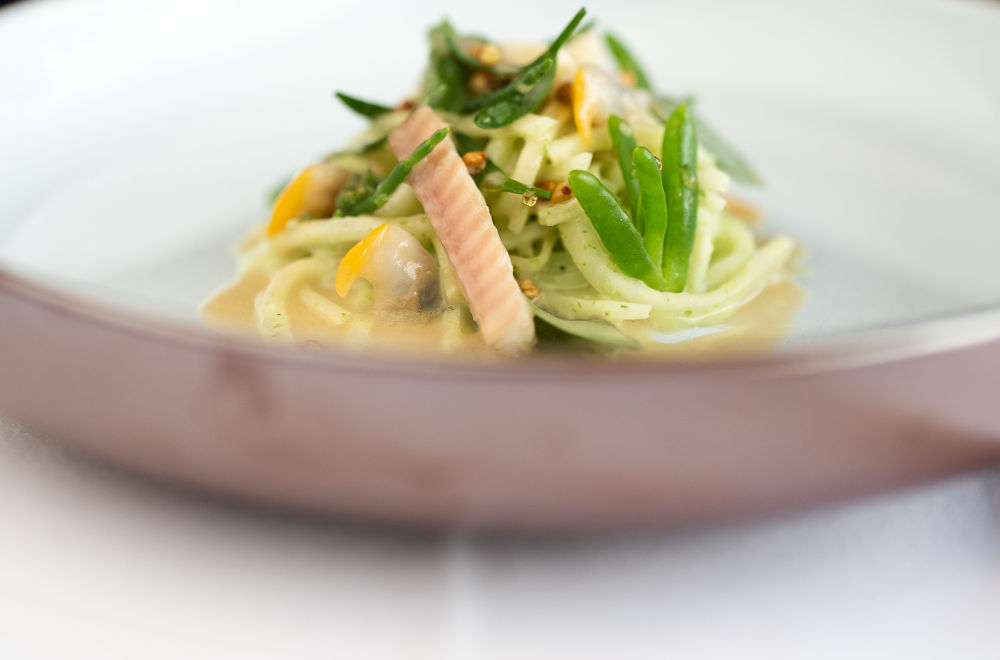
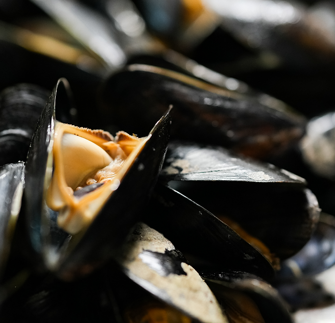
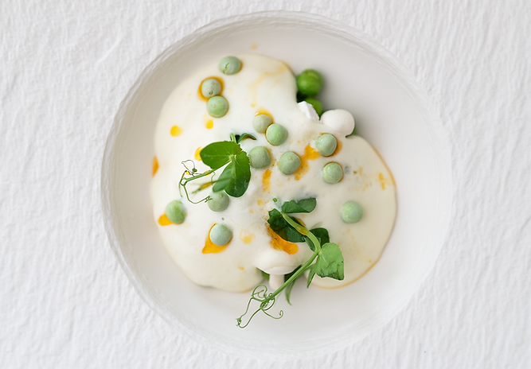
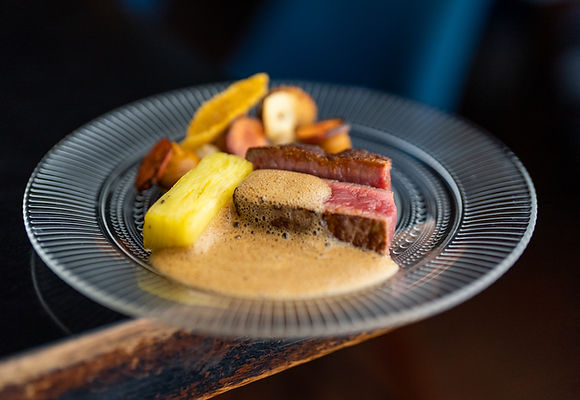
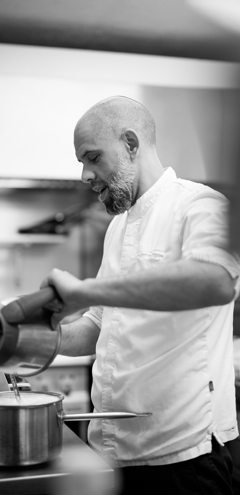

Purmerplein 8, Amsterdam-Noord
De Franse keuken met een Portugese knipoog
Een lieflijk buurtrestaurant van chef Sherif Khalil, waar het draait om moeiteloos genieten van naar gerechten vertaalde smaakherinneringen. Met een portkaart om je over te verbazen.
Woensdag tot en met zondag vanaf 18.00 uur

Van lazuur, beladen met een zwaan van zilver, geringd en gepoot van keel, gehalsband met een kroon van goud.
Lazuur is de plek op het Purmerplein om te genieten van producten van de hoogste kwaliteit, in een ongedwongen ambiance. Niet meer, niet minder.
Op de wijnkaart vind je zomaar een oude Madeira en een port uit 1970 op glas, als een van de veertig 'open' wijnen. En wens je iets sterkers, dan ben je hier ook voor een traditionele Aguardente aan het juiste adres.
De kaart
Onze keuken is Frans met Portugese invloeden. Uit onze gerechtjes stel je zelf je gewenste diner samen; wij hebben ze in een voor ons logische volgorde gezet, maar daar mag je het gewoon over oneens zijn.
Onze kaart wisselt regelmatig, het kan dus zijn dat deze pagina soms een beetje achterloopt.
Voor bij het aperitief
- Zeewiercrackers met mierikswortelcrème V8
- Charcuterie van de chef16,50
Gerechten
- Bloemkool / gele curry / kappertjes V13
- Mosselen / chorizo / tomaat / rock chives14
- Bacalhau com natas: kabeljauw / aardappel / herfsttruffel / bergamot17
- Uiensoep van cévennes-ui / gougères / comté V15
- Gnocchi / wilde paddenstoelen / kastanje / sherry V25
- Griet / gerookte wortelcrème / venkel / hazelnoot / saffraan26
- Coq au vin: rouleau van poulet noire / boeket van groente / huisgemaakte pancetta27
- Kazen assortiment / chutney (als supplement 5,50)15
- Vijgenblad-ijs / vijgen / chocolade12
- Bramen / yoghurt / munt / gekarameliseerde zonnebloempitten / zoethout12
- Koffie met huisgemaakte friandises8
- Madeleine, los1,50
In de keuken gaan we uit van minimaal drie gangen; bij meer gangen passen we de portionering aan. Heb je dieetwensen of allergieën, dan horen we dat graag. Wij koken niet veganistisch. V = vegetarisch.



Wijn & port
Wij houden van wijn en hebben een speciaal plekje in ons hart voor port. Ons streven is het adres te worden voor een goed glas port en Portugese wijn. Alle porten schenken we per glas, en wie wil proeven kan kiezen voor een flight van kleine glaasjes.
Wijn is leuk, en Portugese wijn al helemaal, dus schenken wij (bijna) alleen maar Portugees. Of het nou om port of wijn gaat, we adviseren je graag.
Port flight
25 ml wit, tawny en ruby
8
Port flight deluxe
25 ml wit, tawny en ruby
15
Wit
- Dão Branco 2023, Álvaro Castro Dão, PTfris met amandel, citrus en granieten mineraliteit7
- Alvarinho 2024, Quinta de Santiago Vinho Verde, PTkrachtig en rijp, met perzik, vanille en een lange warme afdronk9,50
- Vira Cabeças Branco 2023, Cabeças do Reguengo Alentejo, PTaromatisch en vol, met wit fruit, honing en een zachte, ronde textuur10
Rosé
- Rosé 2024, Lavradores de Feitoria Douro, PTdroog en levendig, met rood fruit en een frisse, droge finish7
Rood
- Syrah, Consentido Yecla, ESstevig en kruidig, met zwarte bes, peper en een rokerige ondertoon7,50
- Tinto 2022, Várzea da Pedra Lisboa, PTfruitig en rijp, viooltjes en rokerig met veel rood fruit8
- Sou Tinto 2022, Quinta de Santiago & Mira do Ó Minho, PTelegant en Atlantisch, bijna Bourgogne12
De flessen, ingedeeld op stijl met bekendere voorbeelden erbij, staan op de volledige wijnkaart.
Volgens kenners het hoogst haalbare in port, en het rijpt bijna eindeloos. Bramen, chocolade en kersen; de beste hebben eucalyptus en specerijen als kruidnagel. Alles kan ook per half glas.
| Port | Fles | 5 cl | 2,5 cl |
|---|---|---|---|
| Quinta do Bomfim 2010 Dow's, Cima Corgo, Douro | 85 | 8,50 | 4 |
| Quinta dos Malvedos 2010 Graham's, Cima Corgo, Douro | 93 | 9,50 | 5 |
| Vintage 2016 Quinta do Roriz, Cima Corgo, Douro | 127 | 12,75 | 6,50 |
| Vintage 2015 Quinta do Vesuvio, Douro Superior | 134 | 13,50 | 6,75 |
| Vintage 2011 Duorum, Castelo Melhor, Douro | 140 | 14 | 7,25 |
| Vintage 2003 Quinta do Roriz, Cima Corgo, Douro | 140 | 14 | 7,25 |
| Vintage 2002 Quinta do Roriz, Cima Corgo, Douro | 145 | 14,50 | 7,50 |
| Quinta da Vista Alegre 1994 Quinta da Vista Alegre, Douro | 160 | 16 | 8,25 |
| Vintage 2003 Quinta do Vale Meão, Douro Superior | 160 | 16 | 8 |
| Vintage 2003 Pintas, Douro | 165 | 16,50 | 8,50 |
| Vintage 2000 Dow's, Douro | 165 | 16,50 | 8,50 |
| Vintage 2017 Ramos Pinto, Douro | 200 | 20 | 10,50 |
| Vintage 2001 Quinta do Vesuvio, Douro Superior | 250 | 25 | 13 |
| Stone Terraces 2015 Graham's, Cima Corgo, Douro | 250 | 25 | 13 |
| Vintage 1970 Warre's, Douro | 295 | 29,50 | 15 |
| Vintage 1967 Martinez, Douro | 390 | 39 | 20 |
Witte port, tawny, colheita, ruby, LBV en Madeira (tot en met een Boal uit 1957) staan op de volledige aperitief- en portkaart.
Om te beginnen
- Espumante 3B, Filipa Pato Bairrada, PTcercial, bical, maria gomes; glas of fles (45)9,50
- Blanc de blancs, Lequien Champagne, FR100% chardonnay; glas of fles (75)14
- White port met tonic, munt en limoen8,50
- Tawny port met ginger ale en sinaasappel8,50
Lekkers erbij
- Charcuterie van de chef16,50
- Zeewiercrackers met mierikswortelcrème (V)8
- Ingelegde sardines met toast9,50
Alcoholvrij
- Jus de raisin, alcoholvrije bubbel7
- Diverse biologische sappen4,50
- Crodino Spritz6,50
- Virgin Cosmopolitan9,50
- Rabarber-tijm fizz8
- Gedealcoholiseerde verdejo of tempranillo5,50
Je drinkt onbeperkt water voor 3,75 per persoon, en daarmee maken we drinkwater beschikbaar op plekken in de wereld waar dat niet vanzelfsprekend is.
Per fles
- Brut s.a. Crede, Bisol Valdobbiadene, IT100% prosecco42
- Espumante 3B s.a., Filipa Pato Bairrada, PTcercial, bical, maria gomes45
- Agua Viva s.a., Niepoort Bairrada, PTmaria gomes, bical, cercial57
- Blanc de blancs s.a., Lequien Champagne, FRchardonnay75
- Special Cuvée Brut s.a., Bollinger Champagne, FR60% pinot noir, 25% chardonnay, 15% pinot meunier110
- "L'Âge & La Raison" Extra Brut s.a., Maurice Choppin Champagne, FR80% chardonnay, 20% pinot meunier122
- 744, Jacquesson Champagne, FR40% chardonnay, 40% pinot noir, 20% pinot meunier124
- "MSNL" Extra Brut 2010, Vergnon Champagne, FR100% chardonnay133
Magnum
- Ruio Brut Prosecco 2016, Malibran Valdobbiadene, IT100% glera65
- Brut Royal s.a., Pommery Champagne, FR35% chardonnay, 35% pinot noir, 30% pinot meunier125

Chef Sherif Khalil
Geboren en getogen in Noord, een Portugese moeder, lange zomers bij zijn traditioneel kokende grootmoeder en een klassiek Franse scholing.
Noem het de basis van de karakteristieke kookstijl van chef Sherif Khalil. Lazuur presenteert zich als een lieflijk buurtrestaurant waar het draait om moeiteloos genieten van naar gerechten vertaalde smaakherinneringen.
Denk aan een bacalhau com natas naast een uiensoep met gougères, en een portkaart waar je een avond mee vooruit kunt.
Bezoek Lazuur
- Woensdag
- 18.00 tot 00.00 uur
- Donderdag
- 18.00 tot 00.00 uur
- Vrijdag
- 18.00 tot 00.00 uur
- Zaterdag
- 18.00 tot 00.00 uur
- Zondag
- 18.00 tot 00.00 uur
- Maandag en dinsdag
- gesloten
De laatste reserveringsmogelijkheid is 20.30 uur.
Sunday Roast
De eerste zondag van de maand serveren wij een Sunday Roast, een klassieke driegangen-roast, van 12.30 tot 16.00 uur.
Reserveren
Reserveren kan telefonisch of per mail.
020-636 01 54info@restaurantlazuur.nl
Groot gezelschap? Wil je met meer dan zes personen komen, neem dan vooraf telefonisch of per mail contact op, ter afstemming van de wensen en mogelijkheden.
Purmerplein 8
1023 BD Amsterdam
Met de auto: je parkeert gratis op het Purmerplein.
Met het OV: vanaf Noord/Zuidlijn-halte Noorderpark stap je op bus 35 richting Olof Palmeplein, halte Purmerplein.
Werken bij Lazuur
We zoeken versterking:
- (Ervaren) medewerker bediening, parttime of fulltime
- Leerling of stagiaire in de keuken; wij zijn een officieel leerbedrijf
- Afwasser, voor één of meerdere avonden per week
- Chef de partie, voor vier tot vijf dagen per week
Liefst even een mailtje naar info@restaurantlazuur.nl, dan drinken we hopelijk snel een kopje koffie om kennis te maken.